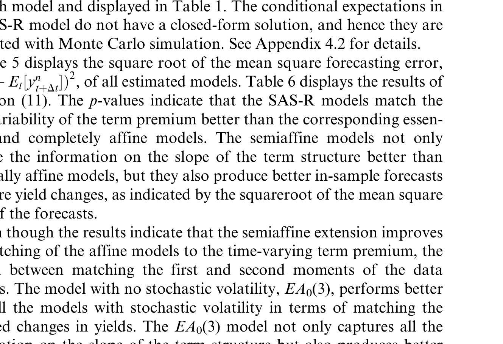
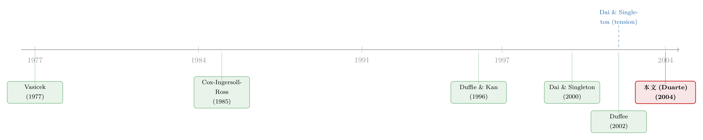

给「风险的价格」松一道绑：利率模型里那场按不下去的跷跷板
本文读的是 Duarte (2004, Review of Financial Studies)：仿射利率模型里，「匹配利率均值」和「匹配利率波动率」像一个跷跷板，按下一头另一头就翘起来。作者怀疑这道张力其实是被「风险价格」(price of risk) 的参数化方式人为造出来的，于是提出一个更灵活的「半仿射平方根」(SAS-R) 模型，给风险价格加上一个常数项。结论有两层：第一，这个新参数化确实能更好地拟合期限溢价、并让本来「半衰期长达几个世纪」的状态变量回到几年；但第二，它仍然解不开那道均值—波动率的张力——一个干脆不要随机波动率的同方差模型，反而把利率变动预测得最准。
1 一个按不下去的跷跷板
先抛一个让做利率模型的人睡不着的事实。
利率的期限结构有两条几乎写进教科书的「定型事实」(stylized facts)：其一，期限溢价(term premium，即国债的预期超额收益) 随时间剧烈起伏；其二，利率的波动率本身也随时间变化。一个好的模型，理应同时把这两件事说圆。
可是 Dai 和 Singleton (2002)、Duffee (2002) 接连发现一件尴尬的事：在最受欢迎的那一类——仿射模型(affine term structure model，即零息债收益率是状态变量的仿射函数)——里，你按住一头，另一头就翘起来。具体地说，一个有足够灵活度去生成「期限溢价时变」的仿射模型，几乎必然丧失了生成「波动率时变」的能力。两个一阶、二阶矩，模型只能照顾一个。
这就是所谓的均值—波动率张力(mean-volatility tension)。它不是小毛病，而是直接动摇了仿射模型「又好用又准」的根基。（关于「曲线拟合得再好，也可能对波动率充耳不闻」这件事，可参见《收益率曲线拟合得再好，也可能对波动率「充耳不闻」》。）
接着，一个自然的问题是：这道张力，到底是仿射模型这个「物种」本身的宿命，还是我们在估计它时偷偷加上的某条假设造出来的幻觉？
本文的全部价值，就压在这个问题上。
2 张力可能是「人为」的：风险价格这条暗线
要回答它，得先看清一个很多人忽略的分工。
Duffie 和 Kan (1996) 给仿射模型下的理论定义里，根本没有对任何一种风险的价格做任何参数化假设。也就是说，债券的定价公式（风险中性测度 Q 下的那一套）是不依赖风险价格的。可一旦你要用时间序列去估计模型——也就是要在真实世界测度 P 下让模型对得上数据——你就必须对风险价格(price of risk) 写下一个具体的函数形式。
于是真相浮现：被实证拒绝的，从来不是「仿射模型」全体，而只是「某一种风险价格参数化下的仿射模型」。如果那道均值—波动率张力，只是被风险价格的「紧箍咒」逼出来的，那么换一个更松的紧箍咒，张力或许就松开了。
那旧的紧箍咒到底紧在哪？这要从两代模型说起。
- 完全仿射(completely affine) 模型（Vasicek 1977、CIR 1985 是其祖先）：风险价格向量第 \(i\) 个分量的符号，被锁死成和某个常向量 \(\lambda_1\) 的第 \(i\) 个分量同号——它永远不能变号。
- 本质仿射(essentially affine) 模型（Duffee 2002 提出）：松了一点。它允许风险价格变号，但有个苛刻的前提——只有当状态变量 \(X_i\) 不去驱动波动率的时候才行。换句话说，你想让风险价格变号，就得拿「波动率的时变能力」去换。
看出门道了吗？本质仿射模型「用波动率换符号」的交易，恰恰就是那道跷跷板的微观来源。
3 模型：给风险价格加一个「常数项」
但真正关键的一步，是 Duarte 的那一手。
设状态变量向量 \(X_t=(X_{1,t},\dots,X_{n,t})'\) 是一个伊藤过程。沿用 Duffie–Kan 的框架，一个仿射模型要满足两个条件。第一，短期利率是状态变量的仿射函数：
$$r(X_t) = \delta_0 + \sum_{i=1}^{n}\delta_i X_{i,t}$$
第二，在等价鞅测度 \(Q\) 下，状态变量服从扩散：
$$dX_t = \kappa^{Q}(\theta^{Q}-X_t)\,dt + \Sigma\,\sqrt{S_t}\,dW_t^{Q}$$
其中 \(S_t\) 是对角矩阵，第 \(i\) 个对角元为 \(\alpha_i+\beta_i'X_t\)——这一项是模型里波动率随状态变量起伏的来源。
到这里都还是标准动作。Duarte 的「半仿射平方根」(Semiaffine square-root, SAS-R) 模型，全部的新意都在风险价格 \(\lambda(X_t)\) 的写法上：
这里 \(S_t^{-}\) 是一个对角矩阵：当 \(\inf(\alpha_i+\beta_i'X_t)>0\) 时，它的第 \(i\) 个对角元是 \((\alpha_i+\beta_i'X_t)^{-1}\)，否则为 \(0\)。三种模型的关系一目了然：
- \(\lambda_0=0\) 且 \(\lambda_2=0\) → 完全仿射；
- \(\lambda_0=0\)（但 \(\lambda_2\) 可非零）→ 本质仿射（Duffee 2002）；
- \(\lambda_0\neq 0\) → 半仿射（本文）。
所以本文的「处理」(treatment) 就是这么朴素：往风险价格里塞一个常数向量 \(\Sigma^{-1}\lambda_0\)。它的妙处在 a3 注解里那个限制——本质仿射模型靠 \(\sqrt{S_t^{-}}\) 来变号，而 \(\sqrt{S_t^{-}}\) 偏偏只在「\(X_i\) 不驱动波动率」时才非零，这才有了「拿波动率换符号」的代价。新加的 \(\Sigma^{-1}\lambda_0\) 是个常数，它让符号能翻转，却完全不碰波动率动态。于是 SAS-R 在理论上可以同时拥有「会变号的风险价格」和「会起伏的波动率」。
代价是什么？是模型在真实测度 \(P\) 下的漂移不再是仿射的了。可以推出 \(P\) 下状态变量的漂移为
$$\mu(X_t) = \kappa\theta + \Sigma\,\sqrt{S_t}\,\Sigma^{-1}\lambda_0 - \kappa X_t$$
（估计中作者把 \(\Sigma\) 限定为单位阵 \(I\)，上式中段就化为 \(\sqrt{S_t}\,\lambda_0\)。）注意 \(\sqrt{S_t}\) 里含着 \(\alpha_i+\beta_i'X_t\)，是 \(X\) 的函数，所以这一项对 \(X\) 非线性——「半仿射」(semi-affine) 之名由此而来；而它又恰好是个平方根项，「平方根」(square-root) 之名也由此而来。漂移非线性会引出「\(P\) 测度下随机微分方程解是否存在」的问题，作者在附录 A.1 里证明了模型仍是无套利的（它容许一个等价鞅测度）。
一句话抓住直觉：本质仿射模型让风险价格「变号」要收一笔「波动率税」；SAS-R 只是开了一张免税的常数发票。
4 怎么估、用什么数据
识别上，这是一篇结构化的极大似然估计(maximum likelihood) 论文，没有 DiD、没有 IV——它的「识别」全在于：风险价格的参数能不能从时间序列里被干净地估出来，并和 \(Q\) 测度的定价动态分开。
作者把 Duffee (2002) 里表现最好的几个仿射模型，逐一和它们对应的 SAS-R 版本配对比较：本质仿射的 \(EA_1(3)\) 配 \(SAS\text{-}R_1(3)\)、完全仿射的 \(CA_2(3)\) 配 \(SAS\text{-}R_2(3)\)、经典的 \(CIR\) 配 \(SAS\text{-}R_3(3)\)。所有模型都取三个状态变量（\(n=3\)），因为利率曲线的变动历来被概括为「水平、斜率、曲率」三个因子（Litterman & Scheinkman 1988）。此外还估了一个 \(EA_0(3)\) 作基准。
数据是 1952 年 1 月到 1998 年 12 月的月度零息债收益率，期限为 3 月、6 月、1 年、2 年、5 年、10 年，每条收益率 564 个观测，用 McCulloch 三次样条法算出（1952–1991 来自 McCulloch–Kwon 1993，1992–1998 来自 Bliss 1997），与 Duffee (2002) 用的是同一套数据。估计时假设 6 月、2 年、10 年三条收益率「无误差地」被观测到（从而可反演出潜在状态变量），3 月、1 年、5 年三条带 i.i.d. 正态测量误差。样本内用 1952–1993（\(T=504\)）估参，样本外留 1994–1998 做预测检验。
5 两层结论：先反转，再反转
然后，结果出现了第一重反转——对 Duarte 有利的那一重。
加上 \(\lambda_0\) 之后，对数似然确实上升了。三对模型的似然比检验给出 \(2\times\)（对数似然差）分别为 4.6、5.1、10.2，对应 \(\chi^2[1]\) 的 p 值为 3.2%、2.3%、0.1%——在 \(CIR\) 那一对上尤其干脆。\(\lambda_0\) 各分量的 t 值也大多在 2 上下（如 \(SAS\text{-}R_2(3)\) 里 \(\lambda_0(1)=1.166\)，t $=2.3$；\(SAS\text{-}R_3(3)\) 里 \(\lambda_0(2)=2.934\)，t $=2.6$）。这个朴素的常数项，不是装饰。
更漂亮的是它对持久性(persistence) 的影响。仿射模型估计里有个长期让人困惑的现象：状态变量极端持久，半衰期动辄几个世纪——一个理应和「经济扩张/收缩的平均时长」同量级的状态变量，半衰期却长达几百年，这在经济上几乎说不通。看 Table 1 里的对比就触目惊心：\(EA_1(3)\) 里 \(k(1,1)=0.003\)，对应半衰期 \(\ln(2)/0.003\approx 230\) 年；而到了对应的 \(SAS\text{-}R_1(3)\)，\(k(1,1)=0.183\)（t $=1.9$），半衰期骤降到约 3.8 年。\(CIR\) 里 \(k(3,3)=9\times10^{-6}\)（半衰期长得近乎荒诞），在 \(SAS\text{-}R_3(3)\) 里也回到了 \(k(3,3)=0.180\)。
这条线索意味深长：所谓「利率因子极端持久」，很可能不是数据的本性，而是旧风险价格参数化「逼」出来的赝品。一旦松绑，水平因子立刻表现出几年量级的均值回复。作者由此提醒：过去那些「利率期限结构与通胀、消费等宏观变量之间的关系」的研究，结论可能被风险价格的限制悄悄扭曲过。
可正当你以为 SAS-R 要大获全胜时，第二重反转来了——而这一重，是冲着作者自己来的。
SAS-R 把期限溢价的时变拟合得更好，却仍然没能解开均值—波动率那道张力。为把这点钉死，作者请出一个根本不允许收益率有随机波动率的同方差(homoscedastic) 模型 \(EA_0(3)\)，专门用来预测收益率的变动。结果如表 5 所示：在样本外，这个「最朴素、连波动率时变都不要」的同方差模型，预测收益率变动的均方根误差，比任何一个带随机波动率的模型都小。

Table 5: displays the square root of the mean square forecasting error
换句话说，你想让模型「会呼吸」（波动率时变），它预测收益率变动的本事反而退步。这不正是那个跷跷板吗——只是从「均值 vs. 波动率」换了个面孔，变成了「随机波动率 vs. 预测力」。SAS-R 给风险价格松了绑，松开了符号那一头，却没能让随机波动率和均值动态真正同时到位。这道张力，比一个常数项要顽固得多。
（这种「换一把尺子，老问题就翻案、或老答案就站不住」的味道，在利率实证里反复出现，可参见《波动率到底藏在哪里？——一篇被「换了把尺子」就翻案的利率期限结构论文》。）
6 文献脉络
把这条线拉直了看，故事其实很清楚。
最早是 Vasicek (1977) 和 Cox、Ingersoll、Ross (1985) 两个经典单因子模型，奠定了「利率服从均值回复扩散」的范式。Duffie 和 Kan (1996) 把它们抽象成统一的「仿射」框架，并指出——定价本身不依赖风险价格的参数化。Dai 和 Singleton (2000) 给出了仿射模型的规范型(canonical form) 与可识别性条件，让不同模型可以被干净地比较和命名（\(CA_m(n)\)、\(EA\) 这套记号即源于此）。
转折发生在世纪之交。Dai–Singleton (2002) 与 Duffee (2002) 几乎同时指出了均值—波动率张力：能拟合期限溢价的仿射模型生不出波动率时变。Duffee (2002) 给出的解法是「本质仿射」——放松风险价格，让它能（在不碰波动率的前提下）变号。本文正站在这条线的最新一环：它顺着 Duffee 的思路再往前推一步，问「如果连那个『不碰波动率』的限制也去掉呢？」，于是有了 SAS-R。它的答案诚实而克制——方向对，但不够。

值得一提的是，「漂移非线性」这条支线也一直有人在敲打（如关于短端是否隐含非线性漂移的争论），与本文「半仿射」让漂移变非线性的做法遥相呼应，可参见《利率会不会「拐弯」？——一个被换了把尺子量出来的老问题》。
7 评论与延伸（Q&A + 研究方向）
(a) 几个可能的疑问
Q：SAS-R 不过是给风险价格加了个常数 \(\lambda_0\)，凭什么算「另一种风险偏好」？
因为风险价格在结构上就是「每单位风险要求多少超额收益」的函数，等价于投资者的风险偏好。完全仿射锁死它的符号、本质仿射用波动率换符号、SAS-R 让它无条件变号——三者描述的是三种不同的偏好结构。\(\lambda_0\) 看似小，却是唯一一个「能让符号翻转又不动波动率」的自由度。
Q：既然定价公式不依赖风险价格，那风险价格到底靠什么被识别出来？
靠真实测度 \(P\) 下的时间序列。\(Q\) 测度负责横截面（某一时点的整条收益率曲线），\(P\) 测度负责时序（收益率怎么随时间漂移）。风险价格正是连接 \(P\) 与 \(Q\) 的那座桥，因此它只能从「收益率的时序动态」里被估出来——这也是为什么「换一种风险价格假设」会改变持久性估计，却不改变当期定价。
Q：似然比检验的 p 值有 3.2%、2.3%、0.1%，这算「显著改进」还是「勉强改进」？
算统计上可检测、但量级有限的改进。0.1%（\(CIR\) 那对）很硬，3.2% 则只在 5% 水平上勉强过关、过不了 1%。更重要的是，作者没有用这点似然增量去吹胜仗——他紧接着用样本外预测把自己的模型也一并「证伪」了，这种克制本身值得尊重。
Q：「半衰期几百年」的状态变量，真的纯粹是参数化造出来的假象吗？
不能下这么绝对的结论。SAS-R 把半衰期从约 230 年压到约 3.8 年，确实说明持久性对风险价格设定高度敏感；但这不等于真实利率因子就一定是几年量级。它更稳妥的含义是：凡是依赖「估计出的持久性」去讲故事的研究（比如利率与宏观变量的长期关系），都该对这种敏感性保持警惕。
Q：为什么一个「更简单」的同方差模型 \(EA_0(3)\) 反而预测得最好？
因为预测收益率「变动」主要吃的是一阶矩（漂移/均值回复）的饭，而随机波动率主要服务于二阶矩。当模型被迫同时迁就波动率时变，它在均值动态上就要做妥协——这正是均值—波动率张力的另一种表现。去掉随机波动率这个包袱，模型把全部自由度都投给了均值，样本外预测自然更稳。
Q：这篇 2004 年的老文章，对今天还有什么用？
它的方法论训诫并没过期：当一类模型被实证拒绝时，先别急着否定模型本身，去查一查你在估计时偷偷维持了哪条辅助假设。很多「模型失败」其实是「辅助假设失败」。这条教训对今天的信用风险模型、汇率模型一样适用。
(b) 几个可能的研究问题与提案
1. 把 SAS-R 式的「风险价格松绑」搬到公司债。 【经济故事】公司债的信用利差里既有违约补偿，也有时变的信用风险溢价；现有结构化/简约式模型在「拟合利差水平」和「拟合利差波动」之间大概率也有类似跷跷板。给违约强度的风险价格加一个 SAS-R 式常数项，看能否同时救活两头。 【可行性】中。数据可用 TRACE 成交价或现成的零息信用曲线；难点在违约强度的潜变量识别和样本外信用利差预测的稳健性，识别上要小心流动性成分的污染。
2. 风险价格松绑后，重估「利率—宏观变量」关系是否被持久性扭曲。 【经济故事】本文暗示旧仿射模型的极端持久性可能是赝品。若属实，那些用仿射因子的持久性去识别货币政策、通胀预期的研究，结论可能要打折。 【可行性】高。直接在同一套收益率数据上估 \(EA\) 与 \(SAS\text{-}R\)，把两套状态变量分别投到宏观变量上对比即可，数据与代码门槛都不高。
3. 在外资持有人维度上检验期限溢价的时变来源。 【经济故事】美债期限溢价的时变，有多少来自本国投资者的风险价格、多少来自外资（如外国央行储备）需求的潮汐？把风险价格按持有人类型拆开，或许能解释为何某些时段期限溢价会「变号」。 【可行性】中。需要 TIC 或官方外资持有数据与期限结构数据合并；识别难点在外资需求的内生性，可借助储备管理规则变化或汇率冲击做工具。
4. 把「随机波动率 vs. 预测力」这道新跷跷板做成正式的诊断。 【经济故事】本文发现同方差模型预测最好，这值得被提炼成一个可复现的「模型选择悖论」：拟合优度高的模型未必预测好。 【可行性】高。用现成的多套期限结构模型，在统一的样本外窗口上系统比较「样本内似然」与「样本外 RMSE」的背离，纯实证、完全 doable。
我的判断
这篇文章最大的贡献，不在它提出的 SAS-R 模型本身，而在它摆正了问题的位置：把「仿射模型为什么失败」这个问题，从「模型物种之争」拉回到「辅助假设之争」。它用一个朴素到近乎吝啬的改动（一个常数向量 \(\lambda_0\)），既证明了风险价格设定确实会左右持久性与期限溢价拟合，又诚实地承认这远不足以解开核心张力——后面这半句，比任何夸大其词都更有价值。
对识别，我有两点保留。其一，结论高度依赖「6 月/2 年/10 年三条收益率无误差观测」这个假设，换一组「无误差」期限，持久性与风险价格估计可能漂移，文中虽援引 Duffee (2002) 的同款设定，但稳健性边界值得再压一压。其二，样本期含 1979–1982 那段异常高波动区间，作者出于「斜率预测力」的考虑保留了全样本，但这段结构突变对波动率参数的杠杆可能很大，分段重估会更让人放心。
后续我最想看到的，是把这套「先怀疑辅助假设、再逐条松绑」的纪律，搬到今天数据更丰富的信用市场和外资持有人维度去——尤其是去问：公司债利差里那道「拟合水平 vs. 拟合波动」的跷跷板，是不是也只是某条被我们默认太久的风险价格假设造出来的。
参考文献
- Cox, J. C., Ingersoll, J. E., Ross, S. A. (1985). A Theory of the Term Structure of Interest Rates. Econometrica 53, 385–407.
- Dai, Q., Singleton, K. J. (2000). Specification Analysis of Affine Term Structure Models. Journal of Finance 55(5), 1943–1978.
- Dai, Q., Singleton, K. J. (2002). Expectation Puzzles, Time-Varying Risk Premia, and Dynamic Models of the Term Structure. Journal of Financial Economics 63, 415–441.
- Duarte, J. (2004). Evaluating an Alternative Risk Preference in Affine Term Structure Models. Review of Financial Studies 17(2), 379–404.
- Duffee, G. R. (2002). Term Premia and Interest Rate Forecasts in Affine Models. Journal of Finance 57, 405–443.
- Duffie, D., Kan, R. (1996). A Yield Factor Model of Interest Rates. Mathematical Finance 6, 379–406.
- Litterman, R., Scheinkman, J. (1988). Common Factors Affecting Bond Returns. Goldman Sachs Financial Strategies Group Research Paper.
- Vasicek, O. (1977). An Equilibrium Characterization of the Term Structure. Journal of Financial Economics 5, 177–188.